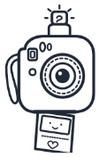

추억을 담아드려요! ✨
청년 인생 4컷
청년 인생 4컷
포토부스

₩0
영등포 청년들을 위한 무료 셀프 AI 즉석사진관
?
TOTAL: 90 SEC
청년 4컷 이용 방법
1
컨셉 선택하기
다양한 청년 맞춤 AI 테마 및 프레임 선택
2
카운트다운 후 4컷 연사 촬영
3초 간격으로 셔터 찰칵! 자동 포즈 가이드 지원
3
이미지 변환 및 다운받기
나만의 4컷 완성 및 즉시 인쇄 / 모바일 다운로드